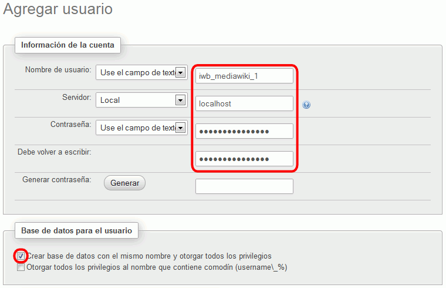
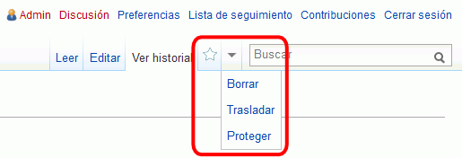

Estos ejercicios corresponden a una versión antigua de MediaWiki. No están actualizados a versiones más actuales porque desde el curso 2014/15 no estoy trabajando en clase MediaWiki ya que estoy dedicando más tiempo a otras aplicaciones. He mantenido estos ejercicios en los apuntes por si le pueden servir a alguien.
En esta lección se proponen soluciones detalladas de los ejercicios de MediaWiki (1). Se recomienda intentar realizarlos primero sin recurrir a estas soluciones.
MediaWiki es software libre que se distribuye bajo la licencia GPL 2.0.
MediaWiki se distribuye en forma de archivo comprimido tar.gz.
En cdlibre.org hay una sección dedicada a Desarrollo web > Wiki, con información detallada sobre la última versión publicada de MediaWiki y otros paquetes de creación de wikis.
La versión MediaWiki 1.22.0, publicada el 6 de diciembre de 2014 y utilizada para elaborar estos ejercicios, se puede descargar de la web
de MediaWiki: MediaWiki 1.22.0 (06/12/13).
Si la versión MediaWiki 1.22.0 ya no está disponible en la web del programa, puede descargarla desde la página de Descarga de aplicaciones antiguas. Se recomienda esa versión ya que estos ejercicios se han preparado para ella.
MediaWiki (1) 2 - Instalar MediaWiki
En este apartado se trata de poner en marcha una wiki en MediaWiki:
Cree con phpMyAdmin un usuario de MySQL con nombre iaw_mediawiki_1, contraseña iaw_mediawiki_1 y base de datos iaw_mediawiki_1.

Una vez descargado MediaWiki, descomprima el fichero comprimido en una carpeta accesible desde el servidor local.
Abra mediawiki/index.php en Eclipse. MediaWiki detecta que no existe el archivo de configuración LocalSettings.php y que es necesario utilizar el asistente de instalación.
El asistente de instalación va preguntando las opciones de configuración deseadas. A continuación se comentan las opciones a elegir distintas de las predeterminadas.
Idioma
Tu idioma / Idioma del wiki: es - español
Comprobación del entorno
MediaWiki indica si el sistema permite la instalación de MediaWiki
Conectar a la base de datos
Configurar el usuario y base de datos creado anteriormente
Configuración de la base de datos
Nombre
Nombre del wiki: WebApps wiki
Nombre del administrador: admin
Contraseña del administrador: adminadmin (por seguridad, la contraseña no puede coincidir con el nombre)
Elegir Ya estoy aburrido, sólo instala el wiki.
Confirmación
Información sobre el resultado de la instalación
Completo
Descargar el archivo de configuración LocalSettings.php y guardarlo en la carpeta Aplicaciones Web > mediawiki.
hacer clic en "enter your wiki".
Si todo ha ido bien, se abrirá la página principal de la wiki:
Al abrir mediawiki/index.php se redirigirá a mediawiki/index.php/Página_principal.
MediaWiki (1) 3 - Crear una nueva página
Sin comentarios.
MediaWiki (1) 4 - Cambiar de nombre (trasladar) una página
Para MediaWiki, "mover" una página es lo mismo que cambiar el nombre a la página.
Para cambiar el nombre de una página, es necesario iniciar sesión en la wiki.
Una vez iniciada la sesión, al abrir cualquier página se muestra en el menú superior la opción "Trasladar" que permite mover la página.

MediaWiki (1) 5 - Borrar una página
Para borrar una página, es necesario iniciar sesión en la wiki.
Una vez iniciada la sesión, al abrir cualquier página se muestra en el menú superior la opción "Borrar" que permite borrar la página.
MediaWiki (1) 6 - Editar una página
Sin comentarios
MediaWiki (1) 7 - Crear usuarios
En MediaWiki (con la configuración predeterminada), cualquiera puede crear un usuario. Cada usuario tiene su página de usuario en la que puede presentarse y ofrecer información sobre sí mismo.
MediaWiki (1) 8 - Subir imágenes
Para poder subir archivos es necesario modificar los archivos de configuración:
archivo de configuración php.ini de Apache:
file_uploads = On
archivo de configuración LocalSettings.php de MediaWiki:
$wgEnableUploads = true;
Al entrar como usuario registrado, en el menú lateral se mostrará la opción Herramientas > Subir archivo.
Los formatos de archivos permitidos son png, gif, jpg y jpeg.